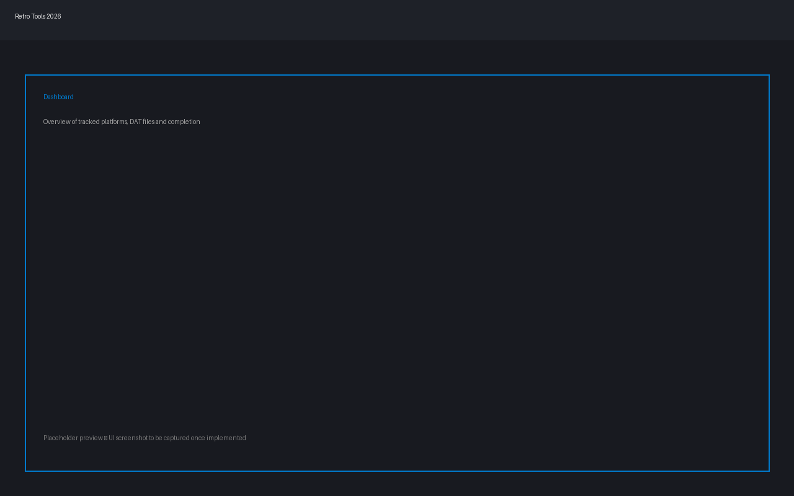
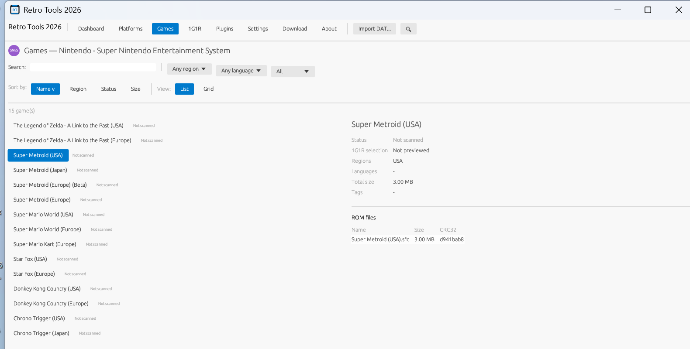

RETRO TOOLS
2026
Turn a messy folder of ROMs into a clean, complete, one-game-one-ROM collection — the best version of every game, no duplicates, no guesswork.
WHAT IT DOES FOR YOU
No spreadsheets, no manual sorting, no second-guessing which file is the "real" one.
One perfect copy of every game
Point it at your ROM folder and your reference game list — it figures out which release to keep and which duplicates to drop.
Your region, your language
Tell it you prefer Europe over USA, or English over Japanese, and it always picks accordingly — down to the smallest revision.
Opens almost anything
ZIP, 7Z, RAR and CHD disc images are all read automatically — no need to extract anything by hand first.
Preview before it touches a file
See exactly what will be kept and what will be removed, with a plain-English reason for every decision, before anything changes.
Undo anything
Every copy, move or cleanup is logged and fully reversible — one click brings your files back exactly as they were.
Fast, live progress
Thousands of files scan in seconds, with a real-time speed readout so you always know how far along it is.
Guided or expert, your call
New to this? A step-by-step wizard walks you through it. Know exactly what you want? Flip to expert mode and see every option at once.
Your whole collection, at a glance
A dashboard shows every platform you manage, how complete each one is, and what still needs attention.
Looks the part
Light or dark theme, adjustable interface size, and a VS-Code-style command palette for getting around fast.
SEE IT IN ACTION
A clean dashboard for your whole collection, and a guided builder for putting a set together.


ALSO INCLUDED
A few extra tools for people building out a full retrogaming setup.
- 📦Batocera / Recalbox / Lakka exportSend your finished collection straight into a ready-to-copy folder for your retro handheld or SD card, system folders named exactly the way each distribution expects.
- 💾Save backup & restoreZip up your save files and save states in one click, and bring them back safely later — anything a restore would overwrite is kept, not lost.
- 🎮Controller profile libraryKeep a personal library of RetroArch controller configs and push the whole set to a freshly set-up device in one go.
- 🖼️Box art & metadataPull box art, screenshots and game info from ScreenScraper.fr using your own free account — nothing is scraped until you connect it yourself.
- 🗂️Smart ES-DE collectionsAuto-build EmulationStation collections by region, language, genre or release year — your own hand-added entries are always kept.
- ✨Shader presetsBuild a library of CRT/scanline/HQx shader presets and assign them per system or per game — clean, one-click removal of anything the tool generated for you.
- 🧰BIOS checkerVerify your emulators' BIOS files are correct and complete, without ever typing a checksum yourself.
- 📋Playlist generatorTurn your finished collection into ready-to-use playlists for RetroArch, LaunchBox or ES-DE.
- 💽Disc image conversionConvert raw disc images to and from the compressed CHD format in one step.
- 🔌Works fully offlineNo account, no cloud, no telemetry. Your ROMs and your data never leave your PC.
- 🧳Portable, if you likeRun it straight off a USB stick with zero installation — or use the full installer, your choice.
- 🆓Free and open sourceNo cost, no ads, no catch. The full source is on GitHub for anyone curious.
GET STARTED
READY PLAYER ONE
Grab the version that suits you — a guided installer, or a portable copy you can run from anywhere.
Windows 10/11 · free · no account needed · full changelog and older versions on the releases page.